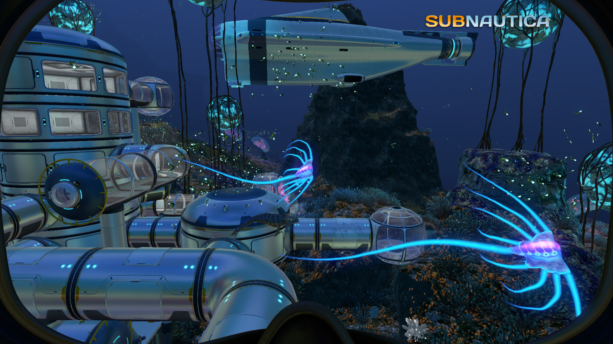
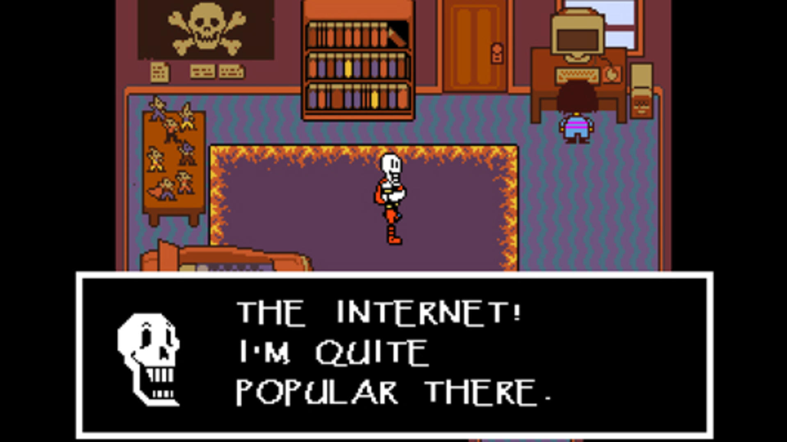
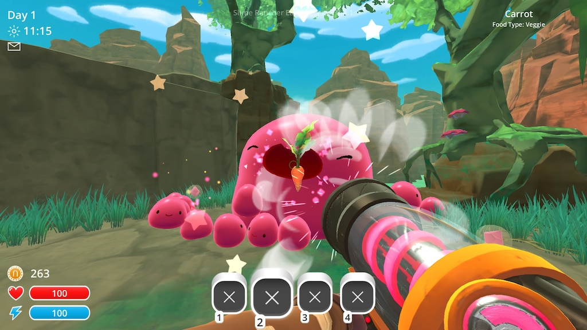

Welke genres vind ik leuk?
Om eerlijk te zijn heb ik eigenlijk maar een genre die ik het leukste vind en dat is "First Person Shooter".
Oftewel, elk spel waarbij je in first-person schiet. Maakt niet uit hoe de game er uit ziet, zolang ik er maar lol uit kan halen.
Een heel goed voorbeeld van, maakt me niet uit hoe het er uit ziet, en ook al was de game grotendeels 3rd person, was het spel Qpang, waar ik al eerder over sprak bij mijn jeugd.

Maar nadat ik Call Of Duty World at War heb gespeeld, was ik veel meer van die games.
Goldeneye 007 volgde, toen Black Ops 1, Battlefield 3, toen Black ops 2, Battlefield 1, COD-WWII, Battlefield V en toen COD-MW (Die ik na een maand weer heb verwijderd).
Maar naast FPS games vind ik spellen met een goed verhaal ook heel interessant, voorbeelden van die ik heb gespeeld zijn: Undertale, Subnautica, Pokémon Diamond en Slime Rancher.
En nu heeft Undertale ook nog het extra'tje van het hebben van een zeer goede Soundtrack.
|
FPS Games
Zoals ik zei, FPS games zijn toch wel mijn favoriete genre video games.
Ik zal een lijstje maken met de FPS games die ik het leukste vind op volgorde.
-
#5 Battlefield 1
Aangezien Battlefield V een beetje een flop was, vond ik het geen slechte game.
Maar ik vond het niet goed genoeg om Battlefield 1 te overtreffen. Battlefield 1 zag er, zoals elke battlefield, mooi uit en was gewoon leuk om te spelen.
Ik vind wel jammer dat er geen "hardcore" mode is bij Battlefield maar dat maakte het niet minder leuk.

-
#4 Call Of Duty - Black Ops 2
Black Ops 2 was na Black Ops 1 mijn favoriete en laatste Black Ops titel die ik heb gespeeld.
Ik heb nooit 3 & 4 gespeeld omdat ze gewoon veel te ver de toekomst in gingen en dat vond ik gewoon niet leuk.

-
#3 Battlefield 3
Battlefield 3 was toch wel de leukste Battlefield die ik heb gespeeld. Ik was niet zo geïnteresseerd in Hardline of 4 dus daarom sprong ik van BF3 naar BF1.
Het leukste aan BF3 vond ik gewoon het feit dat er een ruime selectie aan wapens in zaten, met nog special te ontgrendelen door CO-OP te spelen. De mappen waren ook gewoon leuk om op te spelen.

-
#2 Call Of Duty - Black Ops 1
Black Ops 1 was wel echt, tot mijn mening en van vele anderen, de beste Black Ops in de series.
Omdat Black Ops 1 zo'n succes was, naar mijn mening Black Ops 2 ook, en daarna de series goed downhill ging, was dit echt mijn favoriet.
Ik ben daarentegen wel heel erg benieuwd hoe Black Ops: Cold War zal zijn.

-
#1 Call Of Duty - World At War
World At War, tot heden mijn favoriete Call Of Duty game. Ook al is het al een hele oude titel, uit 2008 om precies te zijn, vind ik het wel een echte COD game.
COD WWII was ook wel leuk, ik speel het nu nog steeds. Maar ik had wel meer nostalgie verwacht. Meer herkenbaardere dingen van WAW.

|
Story Telling
Naast dat ik FPS games het leukste vind, houd ik zo nu en dan ook wel van een spel met een goede storytelling factor.
Eerlijk gezegd heb ik er maar 3 gespeeld waarbij ik de story heel goed vond, of goed genoeg en goed gecompenseerd met andere factoren (Slime rancher bedoel ik daar mee.)
-
Subnautica
Subnautica, naast Undertale mijn favoriete game met een verschikkelijk goed verhaal en concept.
Een terror survival game geheel onder water, daar hebben ze flink over moeten nadenken hoe ze dat het beste konden realiseren kan ik me voorstellen.
Wat maakte deze game voor mij zo goed? Het feit dat het onder water was vond ik al interessant, het zag er mooi uit en zodra je het speelt weet je meteen waarom zoveel mensen enthousiast zijn over het spel.
Het ziet er vriendelijk uit aan de bovenkant, tot je bereid bent om naar de diepte te gaan. Daar begint het echte terror gedeelte.

-
Undertale
Undertale is by far de game die door zowel het verhaal, als de karakters, als de soundtrack viraal is gegaan in 2015.
Een arcade, pixel-art, style game met een "soort van" vecht-systeem. Ik zeg soort van, want je hoeft niet te vechten. Je kan of passief of offensief spelen. Waarbij beiden een totaal andere uitkomst hebben.
Het verhaal zelf is gewoon heel interessant, en de karakters ook. Als je goed op let en terug gaat als je ergens voorbij bent. Kunnen er gekke, en een beetje spook-achtige dingen gebeuren. Goed kippenvel-materiaal.
Op de pagina van muziek kan je wat van de muziek horen, zeker het luisteren waard.

-
Slime Rancher
Slime Rancher had naar mijn mening niet zo'n interessant verhaal, MAAR omdat de game andere charmes had vond ik het waardig om op te noemen.
Het spel ziet er veel te schattig uit om te haten, het is een chill gevoel als je door de crystallen die je verzameld veel geld kan verdienen en dat weer kan gebruiken voor ander dingen.

-
Pokémon: Diamond (Pearl & Platinum)
Pokémon Diamond, Pearl & Platinum vond ik de beste pokemon game die ik heb gespeeld.
Pokémon Black & White kwamen ook wel inde buurt maar ik vond het verhaal van Diamond veel interessanter.
Ik heb Pokémon Shield ook op de switch, maar wat vond ik dat een k*t spel.
Dus ik doe het nu met een emulator en met de oude Pokémon spellen.
|
Wat wil ik gaan maken?
Ik zou natuurlijk, omdat ik deze opleiding doe, graag ook games gaan ontwerpen.
Het liefste zou ik wel een FPS willen maken, echt geen point & click game maken. Bijvoorbeeld zoiets als een Dota of League Of Legends.
Natuurlijk moet je met hele goede ideeën komen om in deze industrie een naam te krijgen. En met een FPS gaat dat helemaal niet makkelijk.
Maar dan zoiets als een Subnautica of Undertale een goede optie zijn. Die hebben een flinke naam gekregen omdat ze iets heel origineels hadden gemaakt.
We gaan het zien waar de toekomst me brengt maar het lijkt me heel leuk om een origineels de industrie in te gooien.
Daarom heb ik ook zo'n respect voor Toby Fox (Undertale)

en Unknown Worlds (Subnautica).

|